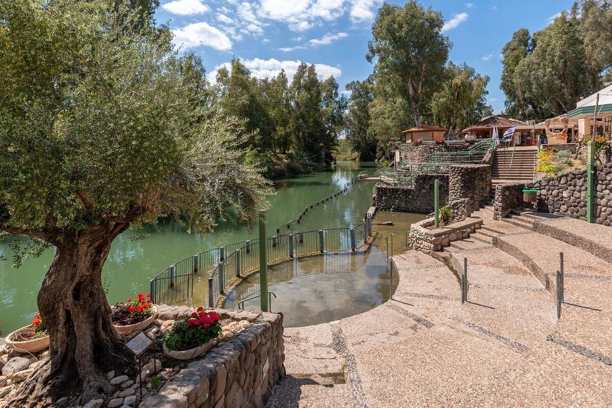
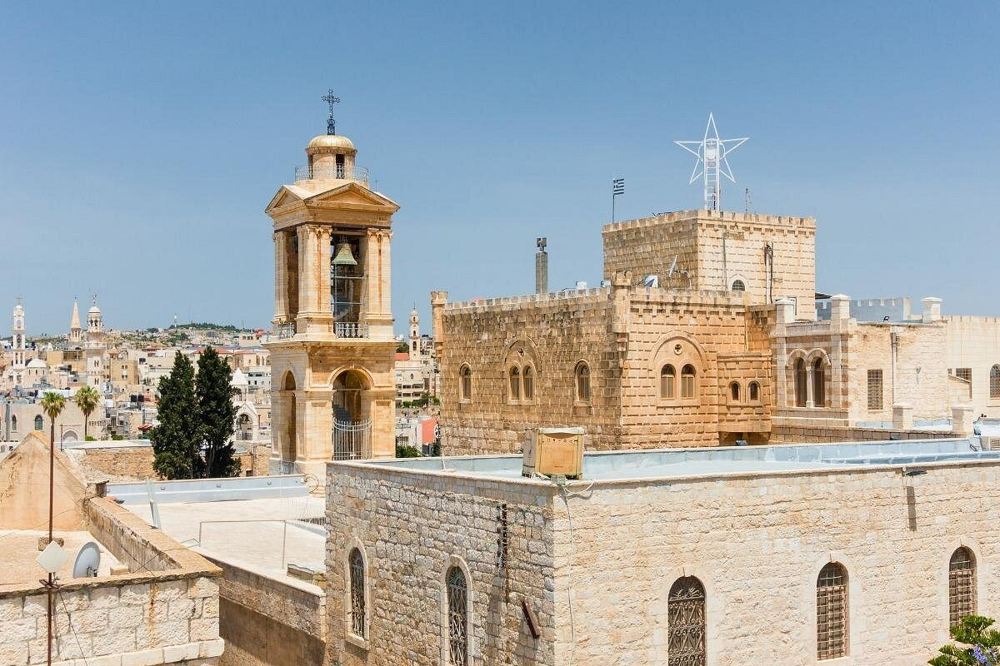
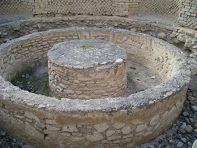

Mezquita de Al-Aqsa
En la cima del Monte del Templo, dentro del antiguo Haram al-Sharif de Jerusalén, o el Noble Santuario, la Mezquita al-Aqsa tiene la distinción de ser el tercer lugar más sagrado del Islam, después de La Meca y Medina en su úni... LEER +

Altos del Golán
Los Altos del Golán, una región rocosa y exuberante en la frontera entre Siria e Israel, ha estado bajo ocupación israelí desde 1967 y es un lugar de conflicto político y territorial. También es un destino turístico popular de la tierra del... LEER +

Barrio Armenio
El Barrio Armenio, el más pequeño de los cuatro barrios de la Ciudad Vieja de Jerusalén, tiene sus raíces en el siglo IV. Eso hace que este pequeño barrio de 2000 habitantes sea la diáspora armenia más antigua del mundo y de uno de los más ...LEER +

Calle Shenkin
Una vez fue una de las calles más geniales de Tel Aviv, Shenkin Street es ahora una calle vibrante, hogar de una variedad en constante cambio de tiendas, boutiques y restaurantes. Aunque ha pasado de su apogeo hippie más y más aclama...LEER +

Capilla de la Ascensión
Situada en la cima del Monte de los Olivos, este monumento panorámico conmemora el lugar donde los cristianos creen que Jesús ascendió al cielo después de su muerte. La atracción estrella es una huella en una losa de un relleno absolutamente...LEER +

Iglesia Dominus Flevit
La Iglesia de Dominus Flevit es una pequeña iglesia franciscana situada a mitad de camino hacia el Monte de los Olivos en Jerusalén. Aunque el edificio solo se remonta a 1955, el sitio contiene las ruinas de una iglesia, un santu... LEER +

Jerusalén Subterránea
Debajo de Jerusalén, lejos del bullicio y ajetreo de las concurridas callejuelas y antiguas atracciones de la ciudad, hay más de una milla (2 kilómetros de senderos) donde se han descubierto algunos de los hallazgos de lo... LEER +

Mar de Galilea
Situado en el norte de Israel, el mar de Galilea es el lago de agua dulce más grande del país. Bordeado por una exuberante campiña y alimentado por el río Jordán, es allí donde encontrará pueblos agrícolas y bulliciosos y mucho más... LEER +

Mar Rojo
El canal del Mar Rojo atrae zarcillos de agua del Océano Índico a través de África y Arabia hasta Egipto, Jordania e Israel. Los buceadores y los que practican esnórquel aprecian las aguas cristalinas del Mar Rojo y la colorida y espectacular... LEER +

Puerta de Damasco
La Puerta de Damasco, la entrada principal a la Ciudad Vieja de Jerusalén durante más de 1000 años, también es conocida como Bab al-Amud, la Puerta de Naplusa, la Puerta de San Esteban y Sha'ar Siquem. Una gran confecci...LEER +

Sala de la Última Cena
La Sala de la Última Cena, también conocida como el Cenáculo, basado en la palabra latina para comedor, Coenaculum, es un lugar religioso sagrado que visitan muchos peregrinos cada año. En la tradición cristiana, las personas... LEER +

Torre de David
A pesar del nombre, la Torre de David fue construida como palacio de Herodes, e incluso pudo haber sido el lugar donde Poncio Pilato condenó a muerte a Jesús. Reconstruida durante siglos, la ciudadela alberga exposiciones más allá...LEER +

Túnel de Ezequías
Camine por el antiguo canal de piedra debajo de la antigua Ciudad de David de Israel, conocida como Túnel de Ezequías. Ha estado canalizando agua hacia Jerusalén durante más de 2000 años, y hoy ofrece una ruta a través de... LEER +

Yad Vashem
El término "yad vashem" proviene del Libro de Isaías y puede traducirse como "un lugar para conmemorar". Yad Vashem, en Jerusalén, es el museo del Holocausto más importante del mundo, un monumento conmemorativo a la de una más y ...LEER +

Yardenit
Situado donde el río Jordán fluye desde el mar de Galilea hacia el Mar Muerto, Yardenit (lugar de bautismo del río Jordán) es uno de los lugares de peregrinación cristiana más importantes del mundo. Se cree que es...LEER +

Belén
Belén, una antigua ciudad de Cisjordania en los territorios palestinos ocupados, alberga muchos lugares religiosos importantes, incluida la Iglesia de la Natividad en la Plaza del Pesebre, que los cristianos creen que es el lugar de....LEER +

Jericó
Jericó es una antigua ciudad bíblica, con asentamientos tempranos que se remontan a hace 10000 años, lo que posiblemente la convierte en el primer sitio de civilización humana. Situado en los territorios que llevaron una ceremonia de apert ... LEER +

Rosh Hanikra
Encaramado 64 metros sobre el mar Mediterráneo en el noroeste de Israel, el Kibutz Rosh Hanikra es parte de la Reserva Natural Achziv. El área es conocida por sus interesantes formaciones geológicas, a saber, cuevas marin...LEER +